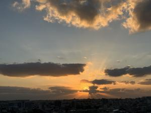

うるがいの話 ある日
最新: チビ猫ハブに噛まれる【うるがいの話 ある日】とは 一日だけのプログです
『うるがいの話』の最新一日だけのプログで、通信料が少なく経済的だ。カニの画像をクリックすると全ての日付が載る『うるがいの話』サイトを表示します
|
|
【うるがいの話】 うるがい(ｳﾙｶﾞｲ urugai)とは、『もずくがに』の名前でとても大きくなります。 |
|---|---|
|
|
【カミマヤーの話】 猫のことを方言でマヤーといいます。カミマヤー（kamimayaa）とは、神の猫のことです。 |
|
【たながぁの音楽】 たながぁ（ﾀﾅｶﾞｰ tanagaa）とは手長えびのことで、何種類かあり大きいのは車 エビぐらいになります。 |

|
【ぶながぁの話】 ぶながぁ(ﾌﾞﾅｶﾞｰ bunagaa)とは、赤い髪の毛、赤い身体、そして身長は１ｍ２０ｃｍ ぐらい、川の蟹を食べているの目撃された。場所は沖縄県国頭郡大宜味村のと ある村僕の隣近所に住んでいる爺さんから、聞いた話です。 |
|
|
【ギーマの話】 ギーマ(giima)とは、山原の里山に咲くスズランに似た、 花を付けます。実は食べられます、 気が付くと口の周りが紫になっています。 |
2023年11月30日 (木）チビ猫ハブに噛まれる
16:08

お隣のナカ奥さんが、チビ猫が動けなくなっているので、ヨメに動物病院へ連
れて行って欲しいと頼まれ、ヨメは一緒に行った。夜、帰ってくるなりハブに
咬まれている跡（なぜか、二つでなく、一つの穴がいくつもあったと不思議が
っていたが、私は牙が一本折れていたのではと言う）が、あり既に毒がまわっ
ていてさらにひどくなるとのこと、血清２０万というがとても支払えないので
獣医が費用の安い方法を薦め、それに従うことにした。診察料が、１万８千円
そして直近の入院料として１万ほど。ナカさんは、持ち合わせがなく近くのコ
ンビニでお金をおろして支払う。２か月ほど入院が必要とのこと、約２０万程
と・・・。チビ猫は、ノラ猫だが、実態はナカさんが家の外で飼っているオス
のネコである。比較的自然に恵まれている環境、数年前にヨメは自宅から百メ
ートル以内の近所で、ハブを見かけ大騒ぎしていた。
午前で、網戸張替えをなんとか終える。もう次は、体力的には出来ないと披露
しきった体で感じた。
１６時０１分 ビットコインの総資産 ￥１６、１８９（↑６９）